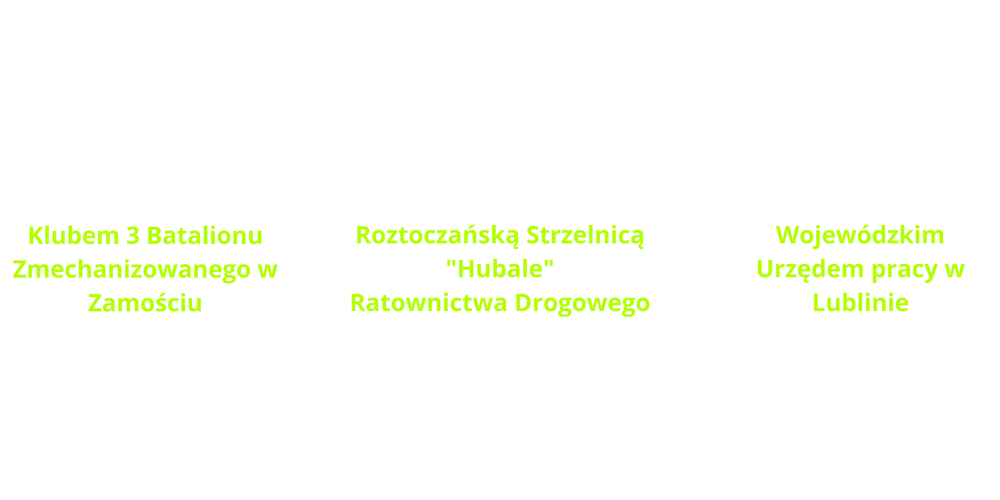
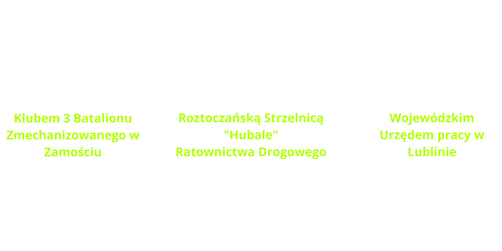

Aktualności
Łączy nas wspólna pasja
- Działamy od 2010 roku.
- Jesteśmy szkołą niepubliczną o uprawnieniach szkoły publicznej dla młodzieży.
- Nauka trwa 4 lata, kończy się egzaminem maturalnym.
- Oprócz przedmiotów ogólnokształcących szkolimy w zakresie przedmiotów specjalistycznych.
- Uczniowie uczestniczą w obowiązkowych zajęciach, które znajdują się na świadectwie ukończenia szkoły: edukacje specjalistyczne (przygotowanie wojskowe, edukacja policyjna, edukacja straży granicznej, taktyka i techniki interwencji, angielski w służbach mundurowych).
KIERUNKI KSZTAŁCENIA
Klasa Wojskowa
Jeżeli należysz do osób, które cenią dyscyplinę, są obowiązkowe i zdolne do poświęceń - profil wojskowy jest dla Ciebie.
Klasa Policyjna
Jeżeli jesteś odpowiedzialny, bezkompromisowy oraz lojalny to znaczy, że masz cechy cenione w policji i klasa o tym profilu jest dla Ciebie.
Klasa Straż Graniczna
Odwaga, siła i odpowiedzialność to cechy każdego pogranicznika. Jeżeli chciałbyś znaleźć się w tym gronie to nauka w LO CSM Zamość na profilu straż graniczna może Ci to ułatwić.

Uczymy się od najlepszych...
Profesjonalna kadra prowadząca zajęcia specjalistyczne w ramach edukacji poszególnych oddziałów.
W jej skład wchodzą oficerowie i specjaliści:
Wojska Polskiego
Policji
Straży Granicznej
Sztuk Walki
...oraz współpracujemy z:
 

Nasza
KADRA
Poznaj naszych nauczycieli.
@locsm_zamosc Parę pyta≈Ñ do naszych nauczycieli üòÅ Sprawd≈∫ to! #nauczyciel #nauczycielka #teacher #dc #foryou #dlaciebie #szkola #zamosc #locsm #pytanie #sonda ‚ô¨ d≈∫więk oryginalny - LOCSM_ZAMOSC
MUNDURÓWKA W AKCJI